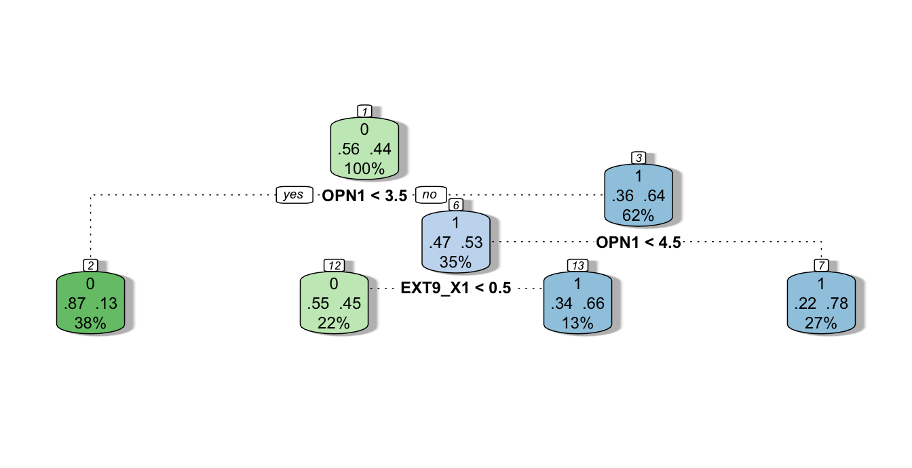
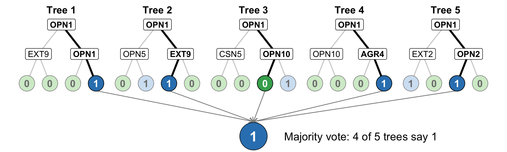
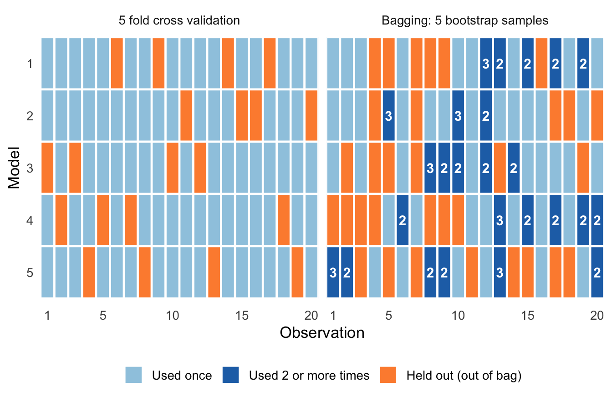
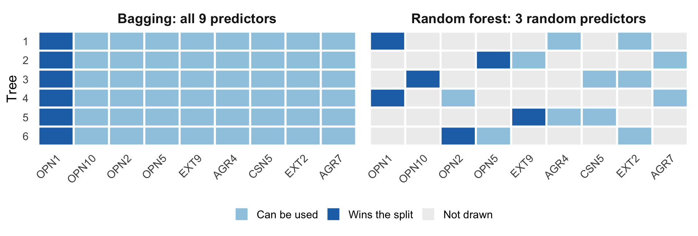

Random Forests
Today’s Lecture
In today’s lecture we will cover:
- Why bagging is not enough
- The idea behind random forests
- The random forest algorithm
- Out of bag error and variable importance
- Tuning a random forest
- Random forests in R
Why Random Forests?
Random forests are among the most successful and widely used machine learning models. Many people treat them as the default first model for prediction from tables of data, because they:
- need little tuning,
- handle nonlinear effects and interactions on their own,
- work with both categorical and continuous predictors, and
- hold up well against noise and overfitting.
Where We Left Off
Random forests build directly on the last two lectures, so we start with a quick recap: a single decision tree, then bagging.
- Why does a single tree overfit?
- Why does averaging many trees help?
Recap: A Single Decision Tree
- A tree grows by greedy splits: at each node, it takes the split that most reduces impurity.
cplimits its size, and cross validation choosescp. Our tree had 4 leaves, split first onOPN1, and reached a test Kappa of 0.469.- Its weakness is instability. Depending only on how the folds were drawn, cross validation chose trees with anywhere from 2 to 17 leaves.
Recap: Bagging
Bagging, short for bootstrap aggregating, fixes that instability by averaging:
- Draw many bootstrap samples: each the same size as the data, sampled with replacement.
- Grow a deep, unpruned tree on each sample. Each tree has low bias and high variance.
- Combine the trees: majority vote for classification, average for regression.
Each tree overfits its own sample in its own way. Averaging many of them cancels out much of that variance.
How the Trees Combine
Here is one new respondent passed through 5 bagged trees. Each tree classifies the respondent on its own, and then we count the votes.

- Each tree sends the respondent down to one leaf. The most common class in that leaf is the tree’s vote.
- The class with the most votes wins. Here 4 of the 5 trees vote 1, so we predict
OPN8 = 1. - The share of votes, 4 out of 5 or 0.80, serves as the predicted probability.
- For regression, we average the trees’ predicted numbers instead. Random forests combine their trees the same way.
Recap: Bagging on the Personality Data
| Test set | Single tree | 100 bagged trees |
|---|---|---|
| Accuracy | 0.741 | 0.774 |
| Kappa | 0.469 | 0.543 |
| Sensitivity | 0.654 | 0.752 |
| Specificity | 0.810 | 0.792 |
- Each bagged tree had more than 80 leaves. Any one of them overfits, but the average of 100 predicted better than the single pruned tree.
- The out of bag error was 0.28, so about 72% of observations were classified correctly by the trees that never saw them.
- The cost: there is no longer a single tree to read.
Bagging Looks Like Cross Validation
Both methods fit many models, each on part of the data, and keep the rest for checking. Here are 20 observations, split up for 5 models each way.

- In cross validation, every column has exactly one orange cell.
- In bagging, the orange cells fall at random, about 37% of each row, and some observations are drawn two or three times (the numbers).
Same Idea, Different Goal
| \(k\) fold cross validation | Bagging | |
|---|---|---|
| Each model is fit on | \(k - 1\) of the \(k\) folds | a bootstrap sample, with repeats |
| Held out from each model | one fold, \(1/k\) of the data | the out of bag observations, about 37% |
| Each observation is held out | exactly once | by about 37% of the models |
| The models are then | used to estimate error, then set aside | averaged into the final prediction |
| The held out data give us | the cross validation error | the out of bag error |
The key difference: cross validation fits models to measure a method, and bagging fits models to become the method. The out of bag error is a cross validation estimate that bagging gives us for free.
If the out of bag error comes for free, why do we still use cross validation?
One Problem Remains
All 100 bagged trees split first on OPN1.
- In bagging, every tree can choose from every predictor at every split.
- A strong predictor like
OPN1wins the first split in nearly every bootstrap sample, so the trees end up looking alike.
If every tree starts with the same question, how different can their predictions be?
Why Are Similar Trees a Problem?
When the trees look alike, they make similar predictions, and similar mistakes. How much averaging helps depends on two things:
\[ \text{Var}(\bar{f}) \approx \rho \sigma^2 + \frac{(1 - \rho)\sigma^2}{B} \]
- \(\sigma^2\) is the variance of each tree,
- \(\rho\) is the correlation between the trees’ predictions, and
- \(B\) is the number of trees.
Adding trees shrinks only the second term. If \(\rho\) is large, the first term dominates, and more trees barely help. Averaging 100 identical trees gives you the same tree.
How Can We Fix This?
Make the trees less alike by adding randomness to how each one is grown.
Random forests do this by choosing a random subset of predictors at each split. Then:
- different trees see different predictors,
- they grow differently,
- their errors are less correlated, and
- averaging them reduces variance much more.
A Brief History
- In 1995, Tin Kam Ho at Bell Labs grew trees on random subsets of the predictors and combined them, calling the result “random decision forests.”
- In 1997, Yali Amit and Donald Geman used randomly chosen splits to build many trees for recognizing handwritten shapes.
- In 2001, Leo Breiman, who had introduced bagging in 1996, combined bagging with random predictor subsets at each split in his paper “Random Forests.” He also showed how to use the out of bag observations to estimate error and variable importance.
Breiman’s version is the one in nearly every software package today.
What Is a Random Forest?
A random forest is an ensemble of decision trees, each trained on:
- a different bootstrap sample of the data, like bagging, and
- a random subset of the predictors at each split.
Each tree makes a prediction, and the forest combines them:
- by majority vote for classification, and
- by averaging for regression.
A Random Subset of Predictors
A single tree, and every bagged tree, searches all predictors for the best split. A random forest changes this one step:
- At each split, draw a random subset of \(m\) predictors.
- Find the best split among those \(m\) only.
Typical defaults, where \(p\) is the number of predictors:
- classification: \(m = \sqrt{p}\)
- regression: \(m = p / 3\)
With \(m = p\), a random forest is the same as bagging.
Random Predictors at Each Split
Six trees pick their first split from the same 9 predictors, listed from strongest to weakest. A random forest with \(m = 3\) draws 3 of them per split.

- Bagging:
OPN1can always be used, so it wins the first split of every tree. - Random forest:
OPN1is drawn for about 1 in 3 splits. The rest of the time, the best predictor in the subset wins. - A new subset is drawn at every split, so a tree can still use
OPN1further down. - The trees end up less alike, so their mistakes overlap less.
The Random Forest Algorithm
Given training data with \(n\) observations and \(p\) predictors:
- Choose the number of trees, \(B\).
- For each tree \(b = 1, 2, \ldots, B\):
- Draw a bootstrap sample from the training data.
- Grow a tree on that sample. At each node:
- randomly select \(m\) predictors,
- choose the best split among them, and
- keep splitting, with no pruning.
- Combine the trees: majority vote for classification, average for regression.
Out of Bag Error
As in bagging, each tree is trained on a bootstrap sample, about 63% of the observations. The other 37% are out of bag for that tree.
- For each observation, predict its outcome using only the trees that did not see it.
- The resulting out of bag error estimates error on new data, without setting aside a separate validation set.
Variable Importance
A forest has no single tree to read, but it can still tell us which predictors mattered.
- Impurity importance: add up how much each predictor reduced the Gini impurity (or the variance, for regression) across every split that used it, in every tree.
- Permutation importance: shuffle one predictor’s values and measure how much the out of bag error rises. A predictor the forest relies on makes the error rise a lot.
Limitations
- Like bagging, a random forest is much harder to interpret than a single tree.
- It can be slow to train on large datasets with many trees.
- It extrapolates poorly beyond the range of the training data, like most tree based methods.
Random Forests in R
We fit random forests with the ranger package, through caret::train() with method = "ranger". Three settings can be tuned:
| Setting | What it controls |
|---|---|
mtry |
How many predictors are drawn at each split |
splitrule |
How each split is chosen: "gini" for classification, "variance" for regression |
min.node.size |
When a node stops splitting, which controls how deep each tree grows |
The number of trees, num.trees, is not tuned. More trees never hurt a forest; they only take longer.
Tuning mtry
A random forest needs two things that pull against each other:
- Strong trees, each able to predict well.
- Diverse trees, which make different mistakes so that averaging helps.
mtry sets the balance:
- A small
mtryadds more randomness: more diverse trees, but each one is weaker. - A large
mtrygives stronger trees that look more alike. At the maximum, it is bagging.
Tuning min.node.size
min.node.size sets when a node stops splitting. With min.node.size = 5:
- A node with 5 or fewer observations is not split. It becomes a leaf.
- A node with 6 or more can still split, so leaves can end up smaller than 5. A node of 7 can split into 6 and 1.
- In classification, a leaf that stops early can hold both classes, say 3 to
- Its vote is the majority class.
Smaller values grow deeper trees, and larger values grow shallower ones.
The defaults are 1 for classification and 5 for regression. With 1, a tree keeps splitting until nearly every leaf holds a single class. Forests usually do well with deep trees, since averaging removes much of their variance.
Load the Required Packages
The Personality Data Again
The same data, split, and target as the decision tree and bagging lectures: predicting OPN8, “I use difficult words,” from the other 49 items.
data <- read.csv("data/data-final-shuffled.csv")
# items coded 0 and 1, and items stored as text, are categories
dichotomous_vars <- colnames(data)[sapply(data, max) == 1]
character_vars <- colnames(data)[sapply(data, class) == "character"]
cat_vars <- c(character_vars, dichotomous_vars)
data[cat_vars] <- lapply(data[cat_vars], as.factor)
target <- "OPN8"
set.seed(123)
split <- initial_split(data, prop = 0.7, strata = target)
data_train <- training(split)
data_test <- testing(split)The Recipe and the Grid
These data have no missing values, so the recipe only dummy codes the factors. The grid tries five values of mtry, from very random to close to bagging.
Fitting the Forest
Each of the 10 combinations is fit in each of the 10 folds, with 500 trees per forest.
Tuning Results
Cross validated Kappa is highest with mtry = 15 and min.node.size = 5.
Test Set Performance
Reference
Prediction 0 1
0 135 33
1 33 100 Accuracy Kappa Sensitivity Specificity
0.781 0.555 0.752 0.804 Comparing Our Models
The same 301 test respondents, across three lectures:
| Test set | Single tree | Bagged trees | Random forest |
|---|---|---|---|
| Accuracy | 0.741 | 0.774 | 0.781 |
| Kappa | 0.469 | 0.543 | 0.555 |
| Sensitivity | 0.654 | 0.752 | 0.752 |
| Specificity | 0.810 | 0.792 | 0.804 |
Making the trees less alike gives a gain over bagging: Kappa rises from 0.543 to 0.555.
What Mattered Most
varImp() reports impurity importance, scaled so the most important predictor scores 100.
| Predictor | Statement |
|---|---|
OPN1 |
I have a rich vocabulary. |
OPN2 |
I have difficulty understanding abstract ideas. |
OPN10_X1 |
I am full of ideas. |
CSN5 |
I get chores done right away. |
OPN7 |
I am quick to understand things. |
OPN10_X1is the dummy column forOPN10, coded 0 and 1.- Four of the top five are openness items.
OPN1is closest in meaning to the target, “I use difficult words.”
Wrapping Up
- Bagging averages many trees, but trees that look alike limit how much averaging can help.
- Random forests make the trees less alike by drawing a random subset of predictors at each split.
mtrybalances strong trees against diverse trees. Withmtryequal to the number of predictors, a random forest is bagging.- The out of bag observations give a built in error estimate, and impurity or permutation importance shows which predictors mattered.
Bagging and random forests grow their trees independently. Coming next: what if each new tree learned from the mistakes of the trees before it?